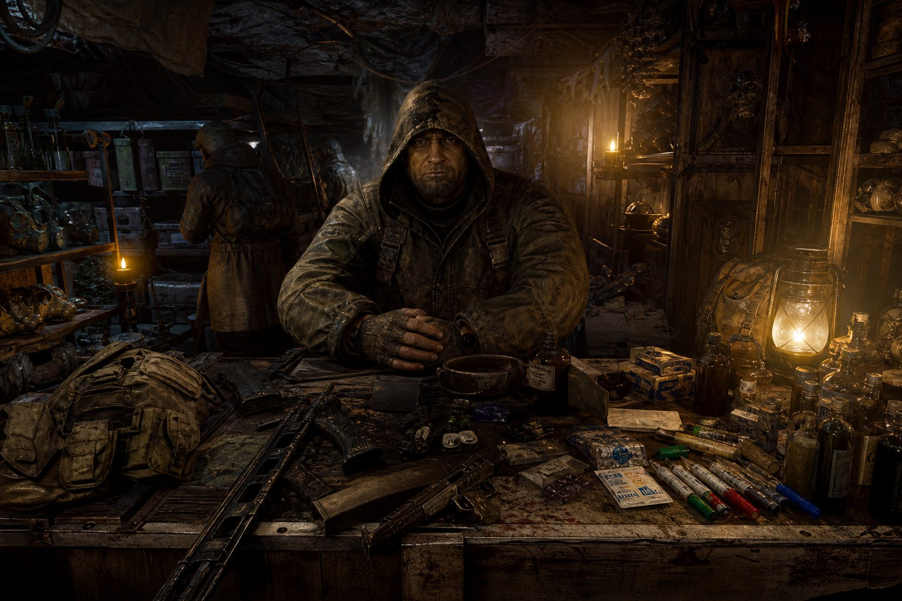

1. Contacts & réputation : le levier caché
Chaque marchand (Contact) dispose d'une jauge de réputation qui monte avec ses missions. Pourquoi c'est vital :
- Commission réduite sur vos ventes Market — chaque point de rep = du Koen conservé.
- Offres supérieures débloquées (plafonds d'achat, meilleurs prix).
- Missions exclusives accessibles uniquement à certains niveaux.
- La fidélité bat la triche : un compte avec rep élevée vend plus cher que n'importe quel « sale/buy trick ».
2. L'art de la vente Market
- Vendez par lots : les slots de vente hebdo sont limités — remplissez-les d'objets haute valeur, pas de junk.
- Déshabillez avant de lister : un fusil nu dans une annonce = cases économisées.
- Surveillez le prix du marché : un objet rare se vend mieux le week-end ; la junk s'écoule en filler.
- Zero-to-hero : les kits low-tier proposés sont souvent profitables à revendre — calculez la marge avant le confort.
3. Barter flips : le système 10–30 %
Le barter échange des objets contre d'autres. La marge vient d'acheter bas / revendre haut. Méthode :
- Liste des trades rentables : composants courants → objets à forte demande (kits populaires S7, munitions demandées, IND70).
- Vérifiez 3 prix de vente avant chaque trade : le profit doit rester positif après commission.
- Patience : un flip à 15 % × 20 fois bat un gamble à 100 % × 1.
- Les missions Contacts donnent souvent les objets de base du barter : double rentabilité.
4. Field Merchants en raid (S7) — le marchand de la raid
Nouveauté Utopia
La Saison 7 a introduit le premier marchand opérable pendant la raid. Jusqu'ici, tout le commerce se faisait après l'extraction, chez un contact ou sur le Market. Le Field Merchant casse cette règle : vous vendez votre loot au milieu de la raid pour libérer de l'espace, ou vous tentez le mystery cargo. Officiel
| Règle | Ce que dit l'officiel |
|---|---|
| Nombre | 1 marchand par raid, interactif 5 minutes après le début de la raid |
| Où | Jeu principal, Infected Zone et Zombie Endless |
| Vendre | Des fournitures lootées, pour gagner de la place dans le sac |
| Acheter | Du mystery cargo — une boîte aveugle, un pari |
| Intel | Acheter et vendre cumule un volume de transactions ; atteindre un certain volume débloque de l'intel |
| Zombie Endless | La devise n'est pas le Koen mais le zombie token : fournitures et contre-mesures zombie |
L'officiel a résumé la mécanique en une phrase : « As you build favor through trading, the merchant may also provide you with highly valuable battlefield and item intel. » Autrement dit : plus vous échangez, plus vous méritez l'intel. Le seuil exact n'a pas été publié — c'est une donnée non confirmée jusqu'aux notes complètes ou à l'affichage en jeu. Officiel
Le risk ladder du mystery cargo
- Prix bas — « offers more stable overall returns ». L'option du grind : plusieurs boîtes, un rendement modeste mais régulier. C'est le seul achat qui ne casse pas une économie.
- Prix élevé — « much more polarized results, with a chance to make a fortune but also a significant risk of loss ». La septic jackpot peut tout vider. L'éditeur recommande explicitement de réunir l'intel avant d'acheter les boîtes chères. Officiel
Le « +20 % sur les objets dorés » : à prendre pour un bruit de lobby
Vous circuler sur Reddit d'un bonus forfaitaire de 20 % pour les objets à fond doré ou jaune vendus en raid au Field Merchant. C'est un chiffre communautaire : ni l'annonce de la saison ni les notes de patch ne mentionnent aucun pourcentage de prime. Ce que l'éditeur confirme, c'est le mécanisme de volume de transactions et le déblocage d'intel. Communautaire
Conséquence pratique : ne bâtissez pas votre plan de farm sur une prime de 20 %. Ce qui est vérifié, c'est que vendre libère de la place et construit la faveur — les deux choses qui comptent réellement.
La boucle qui rapporte vraiment
- Lootez normalement en priorité sur les zones denses.
- Repérez le marchand et vendez votre surplus — ça libère des cases et ça construit la faveur.
- Encaissez l'intel quand il tombe : caches haute valeur marqués sur la carte.
- Utilisez l'intel pour décider si une boîte chère vaut le pari.
- Ce n'est qu'à ce moment-là que la grosse boîte devient un pari raisonnable.
Trois usages selon votre profil
- Orientation loot : vendez le surplus, gamblez sur les boîtes chères seulement une fois l'intel en poche. C'est de la valeur quasi gratuite.
- PvP agressif : le marchand est un arrêt en cours de route, pas un plan. Les combats d'abord, le commerce ensuite.
- Zombie Endless : ce n'est pas un comptoir de spéculation mais un point de ravitaillement — jetez vos zombie tokens dans les contre-mesures pour tenir plus longtemps.
La fidélité : de « severe » à « enthousiaste »
Le Field Merchant ne traite pas tous les opérateurs de la même façon. Son attitude dépend du volume cumulé de transactions que vous avez réalisé avec lui. Le point de départ est severe, et l'attitude s'améliore au fil des raids jusqu'à enthousiaste.
| Palier | Ce qu'il change | Comment y aller |
|---|---|---|
| Severe | Le marchand accepte de commercer, mais ne dit rien sur la valeur des cargaisons | Le point de départ : vous n'avez jamais échangé |
| Neutre | Quelques indices d'information sur la région et sur les cargaisons | Quelques raids réguliers de vente de surplus |
| Amical | Plus d'intel exploitable, notamment sur la valeur des cargaisons de la zone | Un volume de transactions cumulé significatif |
| Enthousiaste | Le palier haut : l'intel devient exploitable avant l'achat coûteux | La régularité sur plusieurs saisons, pas un raid isolé |
La règle d'or du marchand. Vendre d'abord, acheter ensuite. Chaque vente libère de l'espace dans le sac et fait monter votre palier de fidélité, ce qui est précisément ce qui rend l'achat intelligent possible. Le cercle est vertueux : on vend pour pouvoir acheter en connaissance de cause.
Statut de ce tableau : les paliers de fidélité et leur intitulé exact circulent sous la forme de retours de joueurs ; ils sont recoupés par plusieurs sources indépendantes, mais ils ne figurent pas dans les notes de saison publiées. Ce sont donc des indications de terrain, pas des règles officielles. Ce qui est officiel, c'est le principe : plus vous échangez, plus le marchand vous renseigne.
L'indice sonore : identifier une cargaison sans l'ouvrir
Une cargaison mystère produit, au moment où vous la déplacez dans l'interface d'achat, un son qui correspond à ce qu'elle contient. Ce n'est pas une mention de l'éditeur mais une observation reproductible, et c'est de loin le mécanisme le plus rentable du Field Merchant pour qui veut acheter cher.
- Les sons « certain » : certains objets ont une signature sonore unique et sans équivalent. Les presence d'un lion doré, d'un vase, d'une théière ou d'un collier sont des indicateurs forts.
- Les sons « au moins » : d'autres sons correspondent à des objets de valeur au moins moyenne, sans être uniques. Ils indiquent un bon placement, pas un jackpot.
- Le format de la cargaison : la taille affichée de la cargaison donne une information supplémentaire. Certaines dimensions sont statistiquement associées à des contenus plus élevés.
La conséquence pratique. Un son unique vous donne une cargaison quasi certaine. Un son correspondant à un objet de valeur au moins moyenne vous donne une cargaison rentable, même si le résultat final reste variable. Le seul cas où vous devez vraiment hésiter, c'est l'absence d'indice : c'est le moment de passer votre chemin.
Les limites d'achat ajoutent une contrainte supplémentaire : en Tactical Ops, l'achat de cargaisons mystère est plafonné à deux par raid, et la vente à trois opérations. La rareté du marchand en raid — il n'apparaît qu'après un certain délai, et pas dans toutes les parties — transforme chaque négociation en décision à faible nombre de tirages : mieux vaut une bonne cargaison chanceuse qu'une mediocre.
La prime sur les objets de haute qualité
Les Field Merchants apparaissent aléatoirement dans les raids. Quand vous leur vendez directement un objet de haute qualité — fond orange ou fond jaune — en raid, ils l'achètent avec une prime de vingt pour cent, soit un coefficient de 1,2 sur le prix affiché.
La conséquence pratique : ne quittez jamais le raid avec un objet de haute qualité que vous n'aviez pas déjà l'intention de vendre. La vente en raid au marchand est plus rentable que la vente au marché après extraction, et elle libère de l'espace dans le sac au moment où l'espace compte. Si vous récupérez une pièce de haute qualité et que votre sac est plein, la vente immédiate au premier marchand rencontré est presque toujours la bonne décision.
Deux nuances protègent de l'erreur. D'abord, cette prime concerne les objets de haute qualité : la majority du butin courant n'en bénéficie pas, et l'écart de 20 % sur une pièce à faible valeur ne vaut pas le détour. Ensuite, le statut de cette règle est celui d'un retour communautaire : plusieurs guides de Saison 7 la décrivent de la même façon, mais les notes officielles de la saison ne publient pas le tableau des coefficients.
Deke : le contact des offres à durée limitée
Le marché de l'onglet 1 parle de réputation et de volume ; il passe à côté d'un contact qui fonctionne sur un tout autre principe. Deke ne vend pas une gamme stable : il propose des offres à durée limitée, qui changent au fil de ses rafraîchissements. Casques, armures, rigs, sacs, clés, et occasionnellement des munitions à prix très bas. Chaque consultation de son offre est une occasion de comparer.
La règle de consultation. Ce qui change la donne, ce n'est pas l'offre elle-même, c'est la fréquence de consultation : le catalogue bouge, les prix changent, et un contact consulté trois fois par jour offre trois fois plus d'occasions qu'un contact consulté une fois par semaine. C'est un flux de revenu à risque nul : aucune de ces ventes ne demande de sortir en raid, et même du matériel dont vous ne voulez pas peut être revendu au marché pour une petite marge. Communautaire
La discipline du barter. Deux réflexes complètent le tableau. D'abord, comparer systématiquement le prix du barter et le prix du Market : certains contacts cassent le prix sur des armes et des pièces, d'autres facturent au-dessus. Ensuite, ne rien acheter au prix fort quand le jeu vous le donne : les bundles d'événements, les missions de saison et les récompenses de barre offrent régulièrement le même objet pour rien. Communautaire
5. Les erreurs de marchand qui vous coûtent cher
- Ignorer les missions Contacts — c'est la voie royale vers la commission réduite.
- Vendre ses red items en raid au Field Merchant si la différence est minime : parfois le Market paie plus. Comparez.
- Acheter au prix fort ce que le jeu vous donne (bundles d'événements, missions).
- Oublier les dogtags — Valley Helipad en exige 2, l'extraction manquée coûte plus qu'un dogtag vendu.
- Ne jamais vider l'inventaire des munitions gratuites : chaque balle non vendue est un micro-Koen perdu.
6. Synthèse : quoi vendre, où, quand
| Objet | Canal optimal | Raison |
|---|---|---|
| Red item (Elysium, trophée) | Market — cohorte weekend | Rare, la demande explose le week-end |
| Fournitures encombrantes | Field Merchant en raid | Libère des cases et construit la faveur qui débloque l'intel |
| Munitions excédentaires | Market par lots | Liquidité constante, slots optimisés |
| Gear basse valeur | Contact direct | Zéro friction, volume |
| Composants courants | Barter flip | Marge 10–30 % sans combat |
Prochaine étape
Tout mettre ensemble : Guide Progression — saisons, niveaux, Core Masteries et Zombie Research pour construire un compte solide du jour 1 au jour 90.